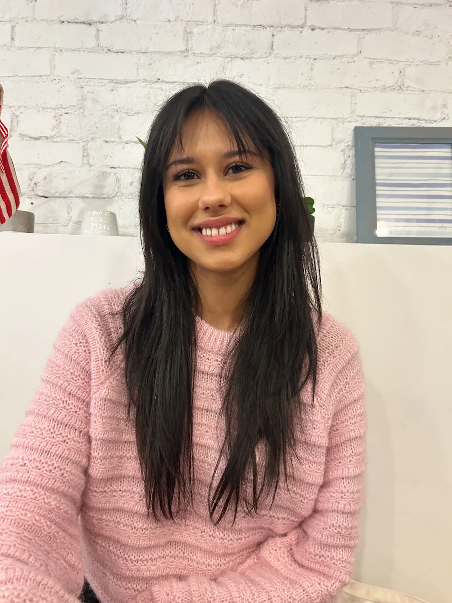

About
Hi, I'm Vivian.

Your celebration is one‑of‑a‑kind; I consider it my responsibility to help bring your confectionary vision to life with the utmost gratitude, care and creativity.
I was born in 1998, moving around a few times before settling in London, Ontario. Throughout my life, art has been the primary outlet for my creativity and curiosity. By the time I started high school I had already explored many mediums: watercolour, acrylic, pastels, clay, charcoal, wax, ink – you name it! I continued to sharpen my skills and explore new techniques by studying art at Western University.
While in school I worked as a part-time cake maker at my local bakery, Angelo's Italian Bakery and Market. While working at Angelo's I was able to combine my passion for art and baking. By the time I graduated I had over 6 years of experience as the primary cake maker and decorator, and the honour of preparing hundreds of cakes for weddings and other celebrations.
In 2025 I decided to start my own business as a fine art cake maker. Each piece is a reflection of my commitment to creating something deeply personal and memorable for you, in my authentic style.
The cornerstone of my creative designs are buttercream and fondant. These materials allow me to make the most of my love for realism and animation. I strive to create pieces that will be a delicious and memorable part of your celebration!